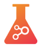
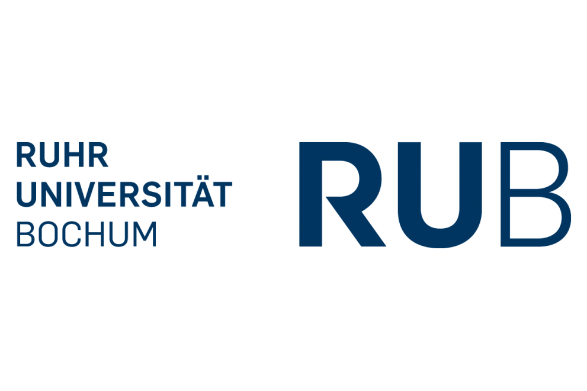
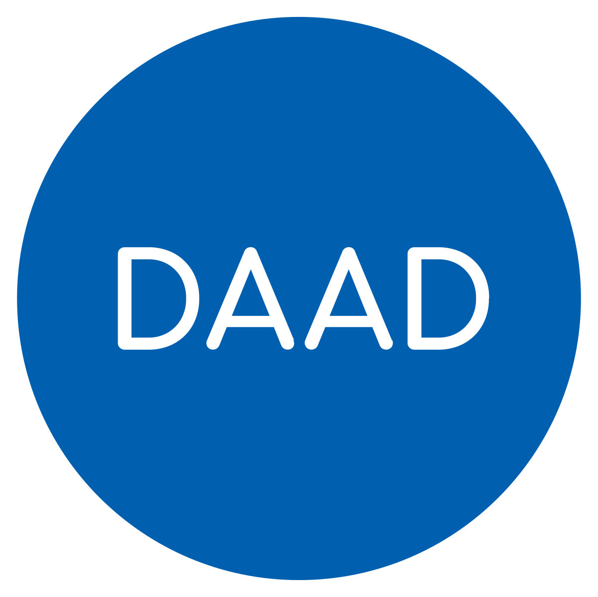

APPCAIR I / Radio-LM


Working on a novel pseudo replacement to RLHF through prompting.
This project also involves creating a modified model with this pseudo-RLHF and then uing it to find a Human-window of LLM explanation-understandability, in corroboration with Donald Michie's work.
We are testing this theory on Radiology/Med students.
This work's presentation led to the first prize in ACM event, slides.
Results on the way ;)
APPCAIR II

This project's report is under review at a double-blind conference. Details soon.
DeepChem 
Contributing to the DeepChem library. As of now I have contributed to the Introduction to Materials Science Tutorial. Also co-developed MolGAN and Normalizing Flow implementations in PyTorch. The abstract from that work from here has been accepted at MoML 2024. I also developed the tutorials for them. [MolGAN] [NormFlows] Preprint on arxiv soon! I am currently working on an "Equivariant Modelling in Materials Science" tutorial.
[RE] Teaching CLIP to Count to Ten

This is a student-led reproduction of the Google Brain paper Teaching CLIP to Count to Ten. We developed novel (incremental) augmentations to the loss function, which showed improvement in our small scale experiments. Apart from this, we created data processing pipelines and also made their evaluation dataset completely public. This work has been submitted to ReScience C, [Preprint]
Event Stream analysis of LiDAR data  
This project is a part of my ongoing DAAD WISE Scholarship at RUB. Details soon.
{kind=link}